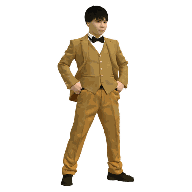

1
教科の中身と、動くものを、一人で
単元を組む人と、教材を作る人が分かれません。だから試作を見てから、中身を決め直せます。企画から教室で試すまで、1週間で回ります。
Who I am
はじめまして。どんな人間が、どんな場所で、何をしてきたのかを先に書いておきます。


3つの軸
この3つが重なるところに、自作した16本の教材があります。
ICTと特別活動は、まだほとんど重なっていません。その両方で使える教材は売っていないので、自分で作って、教室で使っています。
1998年生まれ。東京都の公立小学校で教員6年目、いまは6年生の担任と国語専科、そして特別活動主任（特活主任）をしています。
教材は、自分で作ります。国語・社会・理科・算数・体育・特別活動の7教科で16本。 作って終わりにせず、教室で使って、効いたかどうかを数字と文章で残すところまでを一続きの仕事だと思っています。
勤務校では特活主任として、校外では全国道徳特別活動研究会の幹事と、江東区小学校教育研究会 特別活動部の副部長を務めています。 学級会や児童会活動で、子どもの自治的能力をどう高めていくか ── 自分たちで話し合って決め、動けるようにすること。ここ数年、いちばん考えてきたテーマです。
現職
江東区立第四砂町小学校 教諭
6年生担任・国語専科・特活主任／教員6年目
専門
特別活動（学級会・児童会活動）
国語／ICT活用・教材開発
役職
校内 特別活動主任（特活主任）
全国道徳特別活動研究会 幹事
江東区小学校教育研究会 特別活動部 副部長
作ったもの
7教科16本の教育アプリ
Chromebookで動き、ネットが切れても止まりません
LINE
友だち追加する
直接やりとりできます
特活の場
みんなの特活ひろば（仮）
特別活動の先生のグループ。どうぞご参加ください
教室の外では
What I bring
「アプリを作れます」だけでは、お仕事にはならないと思っています。 教材会社の方・研修をお考えの方に、わたしが持ち込めるものを4つ書きます。
1
単元を組む人と、教材を作る人が分かれません。だから試作を見てから、中身を決め直せます。企画から教室で試すまで、1週間で回ります。
2
Chromebookで開く／ネットが切れても止まらない／個人情報が校外に出ない／45分のどこに入るか。この4つを満たす形でしか作りません。あとから「現場では使えない」と言われることがありません。
3
ICT×各教科の実践者は増えました。ICT×特別活動は、ほとんどいません。わたしは全国道徳特別活動研究会の幹事です。実践してくれる先生のつながりごと、お渡しできます。
4
のべ101名の前後比較（学年平均75.4→82.4）。今年度は論文4本。設計書も自己批判レビューも文書で残しているので、そのまま企画書に使えます。
校外での役職と、外に出した実践です。所属や肩書よりも、そこで何を提案したかのほうを見ていただければと思います。
令和5年度〜8年度2023 – 現在
役職
全国道徳特別活動研究会「語る会」 特別活動 幹事 全国の特別活動の実践者が集まる研究会で、特活の幹事を務めています。実践している先生とのつながりが、ここにあります。令和7年度2025 – 2026
提案
同研究会 全国大会にて、児童会活動の提案 第47回 全国研究大会。自分の学校の児童会活動の実践を、全国の場で提案しました。令和5年度〜8年度2023 – 現在
役職
江東区小学校教育研究会 特別活動部 副部長 区内の小学校の特別活動部の副部長として、研究会の運営と提案に関わっています。令和5年度〜7年度2023 – 2026
役職
教育セミナー授業技術分科会 委員 授業の技術を持ち寄って学び合う会の委員を務めていました。令和7年度で終わりました。2026年7月
実践
漢字の実践で、のべ101名の前後比較 6年生3学級・のべ101名。学年平均 75.4 → 82.4（＋7.0）。集計は勤務校の管理職へ提出ずみです。→ 教室で確かめたこと2026年度
執筆
教育論文4本に応募（執筆中） 学事出版教育文化賞／ICT夢コンテスト／東書教育賞／道徳と特別活動の教育研究賞。→ いま取り組んでいること

趣味は、サウナ・スノーボード・バドミントン・動画編集・バイブコーディング。仕事の話ばかりでは、人となりは伝わらないと思うので。